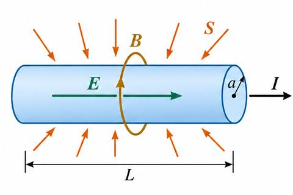
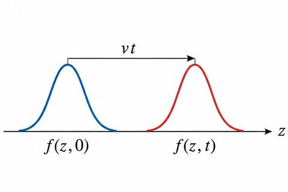
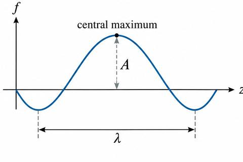
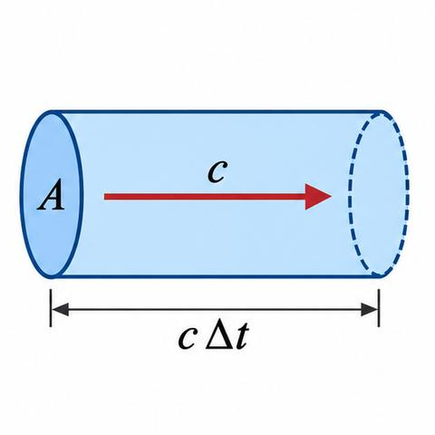

Griffiths, Introduction to Electrodynamics (5th ed.), §8.1.2 and Chapter 9. Figures are redrawn for these notes, not copied from the book; the book figure number is in each caption. Sections 4 (§9.3.3) and 5 (§9.4, §9.5) are background, beyond the syllabus list. Problems are not included.
Section 1: energy and Poynting’s theorem (Griffiths 8.1.2)
8.1.2 Poynting’s theorem
Source: book-sources/m3-s812-poynting.html, Griffiths pp. 363–367. Equations 8.5–8.12 and Example 8.1 in full. Problems 8.1–8.4 are not included.
Faraday’s law $\nabla\times\mathbf E=-\partial\mathbf B/\partial t$ and the Ampère–Maxwell law (Module 2, Section 7.3).
Field energy densities from Eqs. 2.45 and 7.44.
1. Energy density of the fields
The work to assemble a static charge distribution is $W_e=\frac{\epsilon_0}{2}\int E^2\,d\tau$ (Eq. 2.45). The work to establish currents against the back emf is $W_m=\frac{1}{2\mu_0}\int B^2\,d\tau$ (Eq. 7.44). Taking the integrands as densities gives the energy per unit volume:
The Lorentz force on a charge $q$ does work $dW=\mathbf F\cdot d\mathbf l=q(\mathbf E+\mathbf v\times\mathbf B)\cdot\mathbf v\,dt=q\mathbf E\cdot\mathbf v\,dt$, since $\mathbf v\times\mathbf B\perp\mathbf v$. With $q\to\rho\,d\tau$ and $\rho\mathbf v\to\mathbf J$, the rate of work on all charges in volume $\mathcal V$ is
The work done on the charges equals the decrease of field energy in $\mathcal V$, less the energy flowing out through $S$. This is Poynting’s theorem, the work–energy theorem of electrodynamics.
Footnote 4 (book): Eq. 8.9 applies to closed surfaces only. The power through an open surface is the natural interpretation of $\int\mathbf S\cdot d\mathbf a$, but not a consequence of Eq. 8.9. The location of energy is not determined in electrodynamics (Section 2.4.4).
6. Local conservation in empty space
With no charge in $\mathcal V$, $dW/dt=0$. From Eq. 8.11, $\int\partial_tu\,d\tau=-\oint\mathbf S\cdot d\mathbf a=-\int\nabla\cdot\mathbf S\,d\tau$. Since $\mathcal V$ is arbitrary,
$u$ corresponds to $\rho$ and $\mathbf S$ to $\mathbf J$ in the charge continuity equation Eq. 8.4.
Electromagnetic energy alone is not conserved in general, because the fields exchange energy with the charges.
7. Example 8.1: resistive wire (book)
Uniform field along a wire of length $L$ and radius $a$: $E=V/L$. Circumferential field at the surface: $B=\mu_0I/2\pi a$. Magnitude of the Poynting vector:
$\mathbf E\times\mathbf B$ is radial, and the direction is inward. Over the lateral surface, of area $2\pi aL$:
$$\int\mathbf S\cdot d\mathbf a=S(2\pi aL)=VI$$
This agrees with the Joule heating obtained in Section 7.1.1.

Fig. 8.1 (book): a resistive wire carrying current I; E along the wire, B circumferential, S radially inward.
Problems 8.1–8.4 apply the same theorem to cables, a capacitor gap and a charging sphere. They are outside these notes.
Section 2: waves in one dimension (Griffiths 9.1)
9.1.1–9.1.2 The wave equation and sinusoidal waves
Source: book-sources/m3-sec2-wave1d.html, Griffiths pp. 390–396. Equations 9.1–9.20 in full. Problems 9.1–9.4 are listed, not worked.
Prerequisites
Chain rule for functions of $z-vt$ (pre-math M7).
Euler’s formula (pre-math M5).
Newton’s second law and small-angle approximations for a string (Plus Two mechanics).
1. Definition and the general form
A wave is a disturbance of a continuous medium that propagates with a fixed shape at constant velocity. Refinements (absorption, dispersion, spreading in two or three dimensions, standing waves) are set aside for the one-dimensional case shown in Fig. 9.1.

Fig. 9.1 (book): a wave of fixed shape at t = 0 and at a later time, shifted to the right by vt.
With $g(z)\equiv f(z,0)$, the displacement at $z$ at time $t$ equals the initial displacement at $z-vt$:
$$f(z,t)=f(z-vt,0)=g(z-vt)\tag{9.1}$$
A function whose dependence on $z$ and $t$ is confined to the combination $z-vt$ is a wave of fixed shape moving in the $+z$ direction at speed $v$. The functions $f_1=Ae^{-b(z-vt)^2}$, $f_2=A\sin[b(z-vt)]$ and $f_3=A/[b(z-vt)^2+1]$ are waves. The functions $f_4=Ae^{-b(bz^2+vt)}$ and $f_5=A\sin(bz)\cos(bvt)$ are not.
2. Derivation of the wave equation
Net transverse force on a segment of string of length $\Delta z$ under tension $T$, with small angles:
$$\begin{aligned}\Delta F &= T\sin\theta' \\ &-T\sin\theta\approx T\,\frac{\partial^2f}{\partial z^2}\Delta z\end{aligned}$$
Newton’s second law with mass per unit length $\mu$ gives $\Delta F=\mu\,\Delta z\,\partial^2f/\partial t^2$. Therefore small transverse disturbances obey
Fig. 9.2 (book): a string segment between z and z + Δz, with tension T at angles θ and θ′.
3. Solutions
Set $u=z-vt$. Then $\partial f/\partial z=dg/du$, $\partial f/\partial t=-v\,dg/du$, $\partial^2f/\partial z^2=d^2g/du^2$ and $\partial^2f/\partial t^2=v^2\,d^2g/du^2$. Substitution into Eq. 9.2 confirms that any function of the form
$$f(z,t)=g(z-vt)\tag{9.4}$$
is a solution, for any differentiable $g$. Changing the sign of $v$ gives a wave to the left:
$$f(z,t)=h(z+vt)\tag{9.5}$$
Since Eq. 9.2 is linear, the general solution is the sum:
$$f(z,t)=g(z-vt)+h(z+vt)\tag{9.6}$$
Every solution of Eq. 9.2 takes this form (book). Note 1 of the book observes that the solution class is far larger than for an ordinary second-order ODE, which admits two independent solutions; a PDE has no such restriction.
4. Sinusoidal waves
The sinusoidal wave is
$$f(z,t)=A\cos[k(z-vt)+\delta]\tag{9.7}$$
with $A$ the amplitude, $\delta$ the phase constant, and $\delta/k$ the delay of the central maximum. Wavelength and period:
$$\lambda=\frac{2\pi}{k}\tag{9.8}$$
$$T=\frac{2\pi}{kv}\tag{9.9}$$

Fig. 9.3 (book): a sinusoidal wave at t = 0, with amplitude A, wavelength λ and the central maximum at δ/k.
Plus Two recall: speed of a wave
Recall. From Class 12: speed $=$ frequency $\times$ wavelength.
Re-derive.
In one period the wave advances by one wavelength: $v=\lambda/T$.
Frequency is the reciprocal of period: $\nu=1/T$.
Hence $\nu=v/\lambda$; using Eq. 9.9 for $T$ gives $\nu=kv/2\pi$.
Leftward propagation: $f=A\cos(kz+\omega t-\delta)$ Eq. 9.13 $=A\cos(-kz-\omega t+\delta)$ Eq. 9.14. Changing the sign of $k$ reverses the direction and leaves the other parameters unchanged.
Restriction: the method is linear and does not extend to products, since $\mathrm{Re}(\tilde f_1\tilde f_2)\ne\mathrm{Re}\tilde f_1\,\mathrm{Re}\tilde f_2$. Quadratic quantities must use real fields.
6. General waves
Any wave is a superposition of sinusoids over all wave numbers, with $k$ allowed to be negative to include both directions:
The coefficients are given by Fourier theory (Prob. 9.34). The book then restricts all further work to sinusoidal waves, since the behaviour of a general wave follows from it. Problems 9.3 and 9.4 are outside these notes.
9.1.3 Reflection and transmission on a string
Source: book-sources/m3-sec2-bc.html, Griffiths pp. 396–399. Equations 9.21–9.33 in full. Background: beyond the syllabus list (items 9–14 use §9.1.1, §9.1.2 and §9.1.4). Problems 9.5–9.7 not worked.
Prerequisites
Sinusoidal waves and complex amplitudes (§9.1.2).
Continuity of a function and of its first derivative at a point.
1. Setup
Two strings of equal tension $T$ and mass densities $\mu_1$, $\mu_2$ are joined at $z=0$. Wave speeds: $v_1=\sqrt{T/\mu_1}$, $v_2=\sqrt{T/\mu_2}$.
Case $v_2>v_1$: no phase change; $A_R=\frac{v_2-v_1}{v_2+v_1}A_I$, $A_T=\frac{2v_2}{v_2+v_1}A_I$ Eq. 9.32.
Case $v_2\lt v_1$: reflected phase shifted by $\pi$ (“upside down”); $A_R=\frac{v_1-v_2}{v_2+v_1}A_I$, $A_T=\frac{2v_2}{v_2+v_1}A_I$ Eq. 9.33.
Fixed end ($v_2\to0$ relative): $A_R=A_I$, $A_T=0$, full reflection.
9.1.4 Polarization of transverse waves
Source: book-sources/m3-sec2-polar.html, Griffiths pp. 399–401. Equations 9.34–9.39 in full. Problem 9.8 (circular polarization) described, not worked.
Prerequisites
Dot product of vectors (pre-math M9, M10).
Sinusoidal waves (§9.1.2).
1. Transverse and longitudinal waves
In a transverse wave the displacement is perpendicular to the direction of propagation. In a longitudinal (compression) wave the displacement is along it (Fig. 9.7). Sound is longitudinal; electromagnetic waves are transverse.
2. Polarization states
For propagation along $z$, there are two independent transverse displacement directions. Vertical:
Reversing $\hat n$ and advancing the phase constant by $180^\circ$ gives the same wave (footnote 4).
Equal amplitudes with a $90^\circ$ phase difference give circular polarization. Problem 9.8 covers the sense of rotation and how to produce each sense; the optics names are right and left circular polarization.
The book does not use a complex $\hat n$ for elliptical polarization.
Section 3: electromagnetic waves in vacuum (Griffiths 9.2)
9.2.1 The wave equation for E and B
Source: book-sources/m3-sec3-wave-eq.html and the end of m3-sec2-polar.html, Griffiths pp. 401–402. Equations 9.40–9.43 in full.
Prerequisites
Maxwell’s equations in vacuum (Module 2, Section 7.3).
The number is the measured speed of light, so light is an electromagnetic wave (footnote 6 of the book).
4. Role of the displacement current
The term $\mu_0\epsilon_0\,\partial\mathbf E/\partial t$ in (iv) is what makes waves possible. Without it there is no wave equation. The constants $\epsilon_0$ and $\mu_0$ are measured with static charges and steady currents, which have nothing to do with light, yet they fix $c$.
9.2.2 Monochromatic plane waves
Source: book-sources/m3-sec3-plane.html, Griffiths pp. 402–406. Equations 9.44–9.53, Table 9.1 and Example 9.2 in full. Problem 9.9 not worked. Figures redrawn.
Prerequisites
Complex exponentials, real part (§9.1.2).
Faraday’s law (Eq. 9.40, iii); dot and cross products (pre-math M8–M10).
1. Definitions
Monochromatic: a single frequency $\omega$. Plane wave: uniform over each plane perpendicular to the direction of travel $z$ (Fig. 9.9). Then
Fig. 9.11 (book): the propagation vector k and the position vector r; the phase is k · r.
Problem 9.9 is outside these notes.
9.2.3 Energy and momentum in electromagnetic waves
Source: book-sources/m3-sec3-energy.html, Griffiths pp. 406–408. Equations 9.54–9.65 in full; footnotes 9–11. Problem 9.10 described; Problems 9.11–9.13 listed, not worked.
Prerequisites
$u$ and $\mathbf S$ from Section 8.1.2 (Eqs. 8.5, 8.10); the momentum density result (Eq. 8.29).
Average of $\cos^2$ over a period, $\tfrac12$ (pre-math M4).
The flux equals $cu$ because in time $\Delta t$ the energy $uAc\Delta t$ crosses an area $A$.

Fig. 9.12 (book): a cylinder of cross section A and length cΔt; the energy in it crosses A in time Δt.
3. Momentum density
$$\mathbf g=\frac{1}{c^2}\mathbf S\tag{9.59}$$
$$\begin{aligned}\mathbf g &= \frac{1}{c}\epsilon_0E_0^2\cos^2(kz-\omega t+\delta)\hat z \\ &= \frac{1}{c}u\,\hat z\end{aligned} \tag{9.60}$$
Footnote 9: $\mathrm{Re}(\tilde u)\neq u$ for the complex form, so energy densities are always computed from the real fields.
4. Averages and intensity
Because the period (about $10^{-15}$ s) is much shorter than any measurement, the averages over a cycle are used (footnote 10: $\langle\cos^2\rangle=\tfrac12$):
With $\Delta p=\langle g\rangle Ac\,\Delta t$ for a perfect absorber. A perfect reflector gives $2I/c$. The qualitative account with the Lorentz force is incomplete (footnote 11; Problem 9.11).
Problem 9.10: sunlight at 1300 W/m$^2$ on an absorber and on a reflector. Problems 9.11–9.13 are outside these notes.
Section 4: electromagnetic waves in matter (Griffiths 9.3)
9.3.1–9.3.2 Propagation in linear media; normal incidence
Source: book-sources/m3-sec4-linear.html and m3-sec4-oblique.html (Eqs. 9.87–9.89), Griffiths pp. 408–412. Equations 9.66–9.89 in full; footnotes 13–16; Problems 9.14–9.15 described.
Index of refraction Eq. 9.70 and the dielectric constant $\epsilon_r$ (Eq. 4.34). Since $\epsilon_r>1$, light is slower in matter. Footnote 13: the induced dipole fields combine with the original field into a single wave with a new speed (the Ewald–Oseen theorem); transparency follows. Footnote 14: $\epsilon_r$ may depend on frequency, so static values give the wrong $n$ (water: 8.9 static, 1.33 for visible light).
Only the general form of the boundary condition Eq. 9.94 was used. So these laws hold for any wave that crosses an interface, including water and sound waves.
together with the $x$- and $y$-components of $(\tilde{\mathbf E}_{0I}+\tilde{\mathbf E}_{0R})$ and of $\frac1{\mu}(\tilde{\mathbf B}_{0I}+\tilde{\mathbf B}_{0R})$ (9.102, pairs of equations).
5. Polarization parallel to the plane of incidence
For $\mu_1\approx\mu_2$: $\tan\theta_B\approx n_2/n_1$ Eq. 9.113. The reflected beam is then polarized perpendicular to the plane of incidence (footnote 19).
Hence the complex amplitudes are related by $B_0e^{i\delta_B}=(Ke^{i\phi}/\omega)E_0e^{i\delta_E}$ Eq. 9.137, and the phase difference and amplitude ratio are
Here $\tilde\beta$ is defined by Eq. 9.148. For a perfect conductor, $\tilde E_{0R}=-\tilde E_{0I}$ and $\tilde E_{0T}=0$ Eq. 9.150. Problem 9.23 is outside these notes.
3. Dispersion (§9.4.3)
$$v=\frac{\omega}{k}\tag{9.151}$$
$$v_g=\frac{d\omega}{dk}\tag{9.152}$$
Model: spring force $-m\omega_0^2x$ Eq. 9.153, damping $-m\gamma\,dx/dt$ Eq. 9.154, driving $qE_0\cos\omega t$ Eq. 9.155, equation of motion Eq. 9.156. Complex steady state Eq. 9.157 with $\tilde x=\tilde x_0e^{-i\omega t}$ Eq. 9.158 gives
Normal dispersion (index rising with $\omega$) holds away from resonance; anomalous dispersion occurs near each resonance (Fig. 9.22). With damping neglected and $\omega\lt \omega_j$:
$A$ is the coefficient of refraction and $B$ the coefficient of dispersion. Problems 9.24–9.27 are outside these notes.
9.5 Guided waves (background)
Source: book-sources/m3-bg-guided.html (and p. 430 in m3-bg-absorption.html), Griffiths pp. 430–441. Background, beyond the syllabus list. Equations 9.177–9.208 in full. Problems 9.28–9.44 listed, not worked.
Prerequisites
Maxwell’s equations in vacuum (Eq. 9.40).
Vector identities for the divergence and curl (pre-math M13).
Separation of variables in a partial differential equation.
$E_z=0$: TE. $B_z=0$: TM. Both zero: TEM, which a hollow guide cannot carry (footnote 29). Eq. 9.181 is indeterminate for TEM waves, where $k=\omega/c$.
2. TE modes of a rectangular guide (§9.5.2)
Separation of variables, $B_z=X(x)Y(y)$, gives (9.184) and (9.185):
The phase velocity $v$ exceeds $c$, but energy moves at $v_g\lt c$ (Prob. 9.31). Figure 9.25 (book) shows the same result as a plane wave bouncing between the walls at angle $\theta$, with $\mathbf k'=(\pi m/a)\hat x+(\pi n/b)\hat y+k\hat z$ and $\cos\theta=k/|\mathbf k'|$.
3. The coaxial line (§9.5.3)
The central wire and the sheath allow $E_z=B_z=0$. Then (9.181) gives
$$k=\frac{\omega}{c}\tag{9.195}$$
$$cB_y=E_x,\qquad cB_x=-E_y\tag{9.196}$$
and the transverse fields obey the two-dimensional electrostatic and magnetostatic equations (9.197):
The solution with cylindrical symmetry (9.198) is borrowed from the line charge and the straight current:
$$\begin{gathered}\mathbf E_0(s,\phi)=\frac{A}{s}\hat s \\ \mathbf B_0(s,\phi)=\frac{A}{cs}\hat\phi\end{gathered} \tag{9.198}$$
$$\begin{gathered}\mathbf E(s,\phi,z,t)=\frac{A\cos(kz-\omega t)}{s}\hat s \\ \mathbf B(s,\phi,z,t)=\frac{A\cos(kz-\omega t)}{cs}\hat\phi\end{gathered} \tag{9.199}$$
4. Chapter-end problems used in the notes
The equations in the “More Problems on Chapter 9” section are given in the book source. Those used in these notes are: the Fourier inversion theorem (Prob. 9.34, Eq. 9.200); the slab transmission coefficient (Prob. 9.38, Eq. 9.201); the critical angle (Prob. 9.41, Eq. 9.202); the evanescent wave (Prob. 9.41, Eqs. 9.203–9.205); the resonant cavity (Prob. 9.42, Eq. 9.206); and optical tweezers (Prob. 9.44, Eqs. 9.207–9.208). Problems are not worked here.